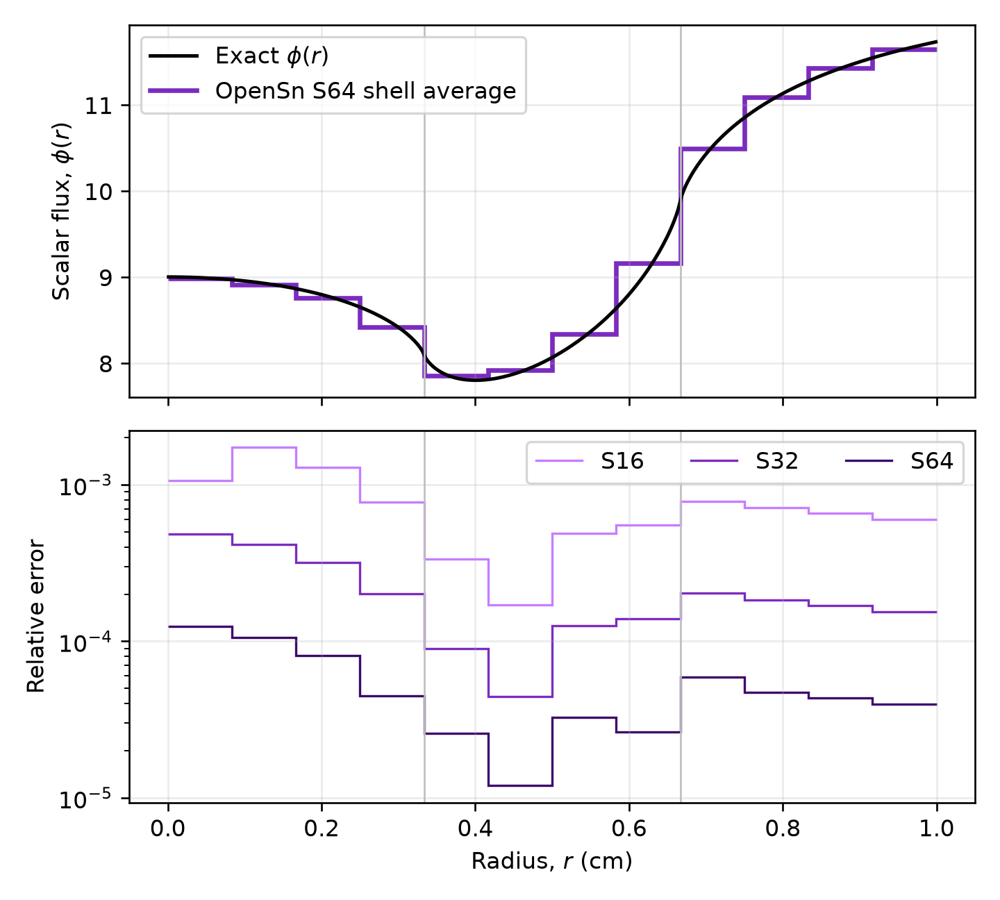

3.1.9. A Spherical Barrier: Chang’s Problem 5
Chang’s barrier problem is one of six spherical transport benchmarks published by Lawrence Livermore National Laboratory [1]. A sphere of radius 1 cm is illuminated by an isotropic incident flux on its surface. Particles must cross a purely absorbing shell, \(1/3 < r < 2/3\) cm, to reach the void core, so the shell casts a “shadow” whose depth depends on the direction of travel. Because nothing scatters, the exact solution is the uncollided flux, and it can be written as a one-dimensional integral over direction.
OpenSn solves this problem directly in one-dimensional spherical geometry, where the only spatial coordinate is the radius \(r\). This tutorial sets up the 1D spherical problem, computes the exact solution independently of OpenSn, and shows that the remaining error comes from the angular discretization and decreases at second order as directions are added. The OpenSn regression suite checks all six of Chang’s problems the same way.
Audience: Users who want to model spherically symmetric problems.
Prerequisites: The One-Dimensional Reed Problem, which introduces 1D meshes, block IDs, and volume postprocessing.
3.1.9.1. Learning objectives
By the end of this tutorial, you will be able to:
build a 1D spherical mesh and assign materials by radius;
set up a
DiscreteOrdinatesCurvilinearProblemwith aGLProductQuadrature1DSphericalquadrature and an isotropic surface source;compute shell-averaged scalar fluxes, which OpenSn weights by the spherical volume element \(4\pi r^2\,dr\); and
verify the solution against an exact reference and measure the angular convergence rate.
3.1.9.2. Import the OpenSn objects
[ ]:
import numpy as np
if "opensn_console" not in globals():
from mpi4py import MPI
from pyopensn.aquad import GLProductQuadrature1DSpherical
from pyopensn.context import Finalize, UseColor
from pyopensn.fieldfunc import FieldFunctionInterpolationVolume
from pyopensn.logvol import RPPLogicalVolume
from pyopensn.mesh import OrthogonalMeshGenerator
from pyopensn.solver import DiscreteOrdinatesCurvilinearProblem, SteadyStateSourceSolver
from pyopensn.xs import MultiGroupXS
rank = MPI.COMM_WORLD.rank
UseColor(False)
3.1.9.3. Create the radial mesh
A 1D spherical mesh is an ordinary 1D orthogonal mesh created with coord_sys="spherical". The node coordinates are radii, stored along the \(z\) axis, so the boundaries are named zmin (inner) and zmax (outer). A mesh that starts at \(r = 0\) is a solid sphere: the center is not a boundary and needs no boundary condition.
The problem has three regions, and the results below are averaged over 12 equal-width shells. Using 8 cells per shell (96 cells in total) puts mesh nodes at both material interfaces and at every shell edge.
[ ]:
radius = 1.0
a, b = 1.0 / 3.0, 2.0 / 3.0
num_shells = 12
cells_per_shell = 8
nodes = np.linspace(0.0, radius, num_shells * cells_per_shell + 1).tolist()
mesh = OrthogonalMeshGenerator(node_sets=[nodes], coord_sys="spherical").Execute()
3.1.9.4. Define the materials
Block ID |
Radius (cm) |
Region |
\(\sigma_t\) (cm\(^{-1}\)) |
|---|---|---|---|
0 |
\([0, 1/3]\) |
void core |
0 |
1 |
\([1/3, 2/3]\) |
absorbing barrier |
1 |
2 |
\([2/3, 1]\) |
void |
0 |
The radius is the \(z\) coordinate, so an RPPLogicalVolume that is infinite in \(x\) and \(y\) selects cells by radius.
[ ]:
def radial_range(r0, r1):
return RPPLogicalVolume(infx=True, infy=True, zmin=float(r0), zmax=float(r1))
sigma_t = 1.0
void = MultiGroupXS()
void.CreateSimpleOneGroup(sigma_t=0.0, c=0.0)
absorber = MultiGroupXS()
absorber.CreateSimpleOneGroup(sigma_t=sigma_t, c=0.0)
mesh.SetUniformBlockID(0)
mesh.SetBlockIDFromLogicalVolume(radial_range(a, b), 1, True)
mesh.SetBlockIDFromLogicalVolume(radial_range(b, radius), 2, True)
xs_map = [
{"block_ids": [0, 2], "xs": void},
{"block_ids": [1], "xs": absorber},
]
3.1.9.5. Assemble and solve the transport problem
GLProductQuadrature1DSpherical places n_polar Gauss–Legendre directions in the direction cosine \(\mu = \boldsymbol{\Omega}\cdot\hat{\mathbf r}\). Streaming in spherical geometry also redistributes particles in \(\mu\), so the quadrature includes two zero-weight starting and final directions that close the angular recursion. The groupset uses the default "single" angle aggregation, which sweeps each direction separately.
The incident angular flux on the surface is \(\psi_0 = 1\) particle/(cm\(^2\) s sr). An isotropic boundary condition is specified by its scalar flux, \(4\pi\psi_0\). With no scattering, a single sweep gives the solution, so a Richardson iteration converges immediately.
The function below solves the problem for a given number of directions and returns the shell-averaged scalar flux. The "avg" operation of FieldFunctionInterpolationVolume weights by the physical volume \(4\pi r^2\,dr\), so each value is a true spherical-shell average.
[ ]:
psi_0 = 1.0
shell_edges = np.linspace(0.0, radius, num_shells + 1)
def solve_shell_averages(n_polar):
quadrature = GLProductQuadrature1DSpherical(n_polar=n_polar, scattering_order=0)
problem = DiscreteOrdinatesCurvilinearProblem(
mesh=mesh,
num_groups=1,
groupsets=[
{
"groups_from_to": (0, 0),
"angular_quadrature": quadrature,
"inner_linear_method": "classic_richardson",
"l_abs_tol": 1.0e-12,
"l_max_its": 10,
}
],
xs_map=xs_map,
boundary_conditions=[
{"name": "zmax", "type": "isotropic", "group_strength": [4.0 * np.pi * psi_0]},
],
options={"verbose_inner_iterations": False},
)
solver = SteadyStateSourceSolver(problem=problem)
solver.Initialize()
solver.Execute()
scalar_flux = problem.GetScalarFluxFieldFunction()[0]
averages = []
for r0, r1 in zip(shell_edges[:-1], shell_edges[1:]):
average = FieldFunctionInterpolationVolume()
average.SetOperationType("avg")
average.SetLogicalVolume(radial_range(r0, r1))
average.AddFieldFunction(scalar_flux)
average.Execute()
averages.append(average.GetValue())
return np.array(averages)
angular_orders = [16, 32, 64]
opensn_averages = {n: solve_shell_averages(n) for n in angular_orders}
3.1.9.6. Compute the exact solution
Without scattering, the angular flux at radius \(r\) in direction cosine \(\mu\) is the incident flux attenuated along the path back to the surface:
where \(\ell\) is the path length inside the barrier. Let \(L_R(r, \mu)\) be the length of the backward ray (from \(r\), in direction \(-\boldsymbol{\Omega}\)) that lies inside a sphere of radius \(R\). With impact parameter \(p = r\sqrt{1 - \mu^2}\),
and the path length through the barrier is \(\ell = L_b - L_a\). The scalar flux is
The integrand has square-root behavior at the cosines where the ray is tangent to an interface, \(\mu = \sqrt{1 - R^2/r^2}\). The integral is therefore split at those cosines, and the substitution \(\mu = \mu_0 + (\mu_1 - \mu_0)t^2\) makes each piece smooth for Gauss–Legendre quadrature. The shell averages use the same \(r^2\) weighting as OpenSn. This reference agrees with Chang’s published expressions to round-off and is accurate to better than \(10^{-8}\), far below the discretization error being measured.
The center provides a quick check: every ray reaching it crosses the full barrier thickness, so \(\phi(0) = 4\pi\psi_0 e^{-\sigma_t (b - a)}\).
[ ]:
gl_x, gl_w = np.polynomial.legendre.leggauss(48)
def chord(R, r, mu):
disc = np.maximum(R * R - r * r * (1.0 - mu * mu), 0.0)
if r < R:
return r * mu + np.sqrt(disc)
return np.where((mu > 0.0) & (disc > 0.0), 2.0 * np.sqrt(disc), 0.0)
def exact_phi(r):
breaks = [-1.0, 0.0, 1.0] + [np.sqrt(1.0 - (R / r) ** 2) for R in (a, b) if R < r]
breaks = np.unique(breaks)
t = 0.5 * (gl_x + 1.0)
total = 0.0
for mu_0, mu_1 in zip(breaks[:-1], breaks[1:]):
mu = mu_0 + (mu_1 - mu_0) * t * t
weights = gl_w * (mu_1 - mu_0) * t
total += np.dot(weights, np.exp(-sigma_t * (chord(b, r, mu) - chord(a, r, mu))))
return 2.0 * np.pi * psi_0 * total
def exact_shell_average(r0, r1):
r = r0 + 0.5 * (r1 - r0) * (gl_x + 1.0)
integral = 0.5 * (r1 - r0) * np.dot(gl_w, [ri * ri * exact_phi(ri) for ri in r])
return 3.0 * integral / (r1**3 - r0**3)
exact_averages = np.array(
[exact_shell_average(r0, r1) for r0, r1 in zip(shell_edges[:-1], shell_edges[1:])]
)
if rank == 0:
print(f"phi(0) from quadrature: {exact_phi(1.0e-8):.10f}")
print(f"4 pi exp(-(b - a)): {4.0 * np.pi * np.exp(-sigma_t * (b - a)):.10f}")
3.1.9.7. Verify the solution
The table compares the S\(_{64}\) shell averages with the exact values. The flux is highest near the surface, where inward-moving particles arrive unattenuated, and falls through the barrier to a minimum at its inner edge. Particles reaching the inner edge nearly tangent to it have crossed the barrier along oblique chords up to \(\sqrt{b^2 - a^2} \approx 0.58\) cm long. Toward the center of the void core these chords shorten to the radial thickness \(b - a = 1/3\) cm, so the flux rises to the center value \(4\pi\psi_0 e^{-1/3} \approx 9.004\).
For each quadrature the largest relative shell-average error is reported. Refining the mesh changes these errors by less than 2%, so they measure the angular discretization error. Doubling the number of directions should reduce the error by about a factor of four.
[ ]:
errors = {
n: np.max(np.abs(opensn_averages[n] / exact_averages - 1.0)) for n in angular_orders
}
order = np.log(errors[16] / errors[64]) / np.log(4.0)
if rank == 0:
print(f"{'shell (cm)':>16} {'OpenSn S64':>12} {'exact':>12} {'rel. error':>11}")
for r0, r1, value, exact in zip(
shell_edges[:-1], shell_edges[1:], opensn_averages[64], exact_averages
):
print(f"{r0:7.4f}-{r1:7.4f} {value:12.6f} {exact:12.6f} {value / exact - 1.0:11.2e}")
print()
for n in angular_orders:
print(f"S{n:<3d} maximum relative error: {errors[n]:.3e}")
print(f"Observed angular convergence order: {order:.2f}")
assert errors[64] < 2.0e-4
assert 1.6 < order < 2.2
print(f"BARRIER_MAX_REL_ERR_S64={errors[64]:.6e}")
print(f"BARRIER_ANGULAR_ORDER={order:.4f}")
3.1.9.8. Plot the radial flux
The following optional plotting code is kept non-executable so regression tests do not create output files. Run it in a new code cell to regenerate the figure. The upper panel shows the exact scalar flux and the S\(_{64}\) shell averages. The lower panel shows the relative error in each shell, which falls by about a factor of four each time the number of directions doubles.
import matplotlib.pyplot as plt
if rank == 0:
r_fine = np.linspace(1.0e-3, radius - 1.0e-3, 400)
fig, (top, bottom) = plt.subplots(2, 1, sharex=True, figsize=(6.0, 5.4))
top.plot(r_fine, [exact_phi(r) for r in r_fine], color="black", label="Exact $\\phi(r)$")
top.stairs(opensn_averages[64], shell_edges, baseline=None, color="#7b2cbf",
linewidth=2, label="OpenSn S64 shell average")
top.set_ylabel(r"Scalar flux, $\phi(r)$")
top.legend()
for n, color in zip(angular_orders, ["#c77dff", "#7b2cbf", "#3c096c"]):
relative_error = np.abs(opensn_averages[n] / exact_averages - 1.0)
bottom.stairs(relative_error, shell_edges, baseline=None, color=color, label=f"S{n}")
bottom.set_yscale("log")
bottom.set_xlabel("Radius, $r$ (cm)")
bottom.set_ylabel("Relative error")
bottom.legend(ncol=3)
for axis in (top, bottom):
for interface in (a, b):
axis.axvline(interface, color="0.75", linewidth=0.8)
axis.grid(alpha=0.25)
fig.tight_layout()
plt.show()

3.1.9.9. Next steps
The OpenSn regression test transport_1d_sph_chang_benchmarks.py solves all six of Chang’s problems: an absorbing sphere with an incident flux, radiating balls and shells in void, an absorber surrounded by void, and an absorbing source. Try replacing the barrier with a volumetric source (pyopensn.source.VolumetricSource) and a "vacuum" surface to reproduce the radiating-shell problem. The angular error is largest at the source edges, where the exact flux has a logarithmic singularity.
3.1.9.10. References
Chang, Six 1D Polar Transport Test Problems for the Deterministic and Monte-Carlo Method, LLNL-TR-819680, Lawrence Livermore National Laboratory (2021). https://www.osti.gov/servlets/purl/1769096
[ ]:
if "opensn_console" not in globals():
from IPython import get_ipython
if get_ipython() is not None:
Finalize()
MPI.Finalize()